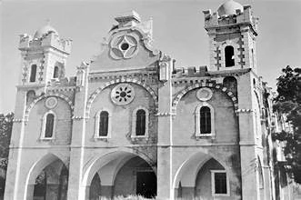
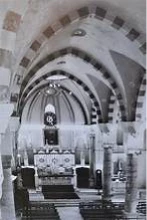

تــــــــاريـــخـــنــــا
كاتدرائية مار اسطفان
أنشئت كاتدرائية مار اسطفان على أنقاض كنيسة أقدم منها سنة ١٩٠٠، يوم كانت المدينة في أوج نموّها. تتميّز الكاتدرائية أنها تجمع الطراز السوري والنيوغوطي، مبنية على نقش بازيليكي ثلاث أسواق تنتهي بثلاث حنايا، وصحنها ثلاث مداخل تحوي الكنيسة كرسي الأسقفية، وله غرفة صغيرة تمثل مار اسطفان، ويما يعلو وتدريج العمدان قد بنيت وأدخلت اللقانة عام ١٩٠٦. والكنيسة كرسي مار اسطفان.
تقع كاتدرائية مار اسطفان المارونية في مدينة البترون، بُنيت على أنقاض كنيسة قديمة جدًا فوق تلّة، ويشرف على بنائها وتزيينها المهندس الإيطالي Joseph Maggiore. وهو نفسه الذي وضع تصاميم كاتدرائية مار جرجس المارونية في بيروت. بُنيت هذه الكاتدرائية على أنقاض الكنيسة الخالصية الجديدة (البزنطية والنيوغوطية)، المنسوب إلى كل من سليمان مار داوديو في صوما - إيطاليا. بدأ بناؤها في العام ١٩٠٠ وانتهى في العام ١٩٠٦. واختُتم باحتفال الأسقفية برئاسة المطران يوسف الدبس (١٨٩٣-١٨٩٩).
الكاتدرائية مبنية على نقش بازيليكي تتألف من صحن رئيسي وثلاثة فتخات. الطراز الرئيسي في الوسط على إسم القديسين اسطفان، والشمالي على إسم قبس يسوع، والجنوبي على إسم السيدة مريم العذراء. في خليتها الوسطى، لوحة زيتية للقديس اسطفان، ولقب "رسول الإنجيل" يعود إلى مار اسطفان. وتتميز الكنيسة بعنصر اللقانة فيها. ويوجد محرابها الرئيسي وعناصرها المعمارية.
تحوي الكنيسة كرسي الأسقفية ولوحة زيتية للعذراء مريم. وتضم لوحة القديس اسطفان، وأيقونة العائلة المقدسة، وأيقونة القديسة مار الياس، ولوحة زيتية للعذراء، وجدت في الكنيسة عام ١٩٠٠.
كهنة رعية مار اسطفان البترون
منذ القدم حتى الساعة في خدمة مزبح الرب

الخوري بيار صعب

الخوري فرنسوا حرب

الخوري مارسيلينو عسال

المطران منير خيرالله
صور قديمة لكاتدرائية مار اسطفان

